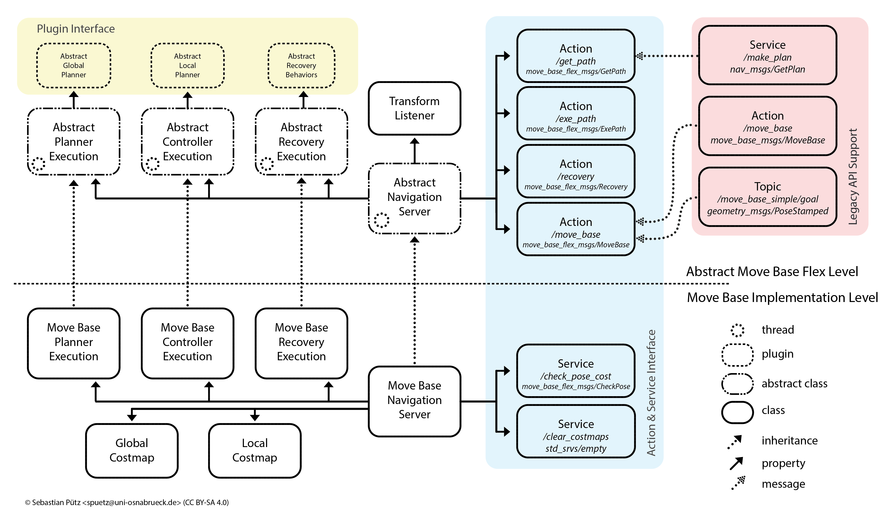
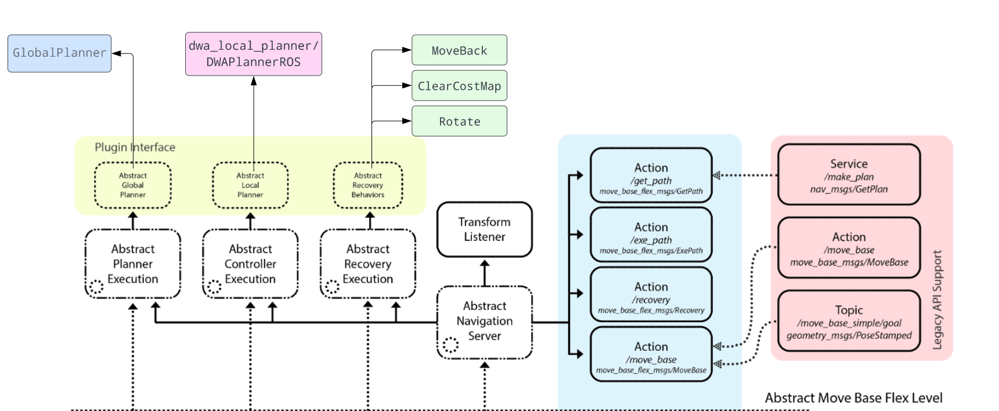
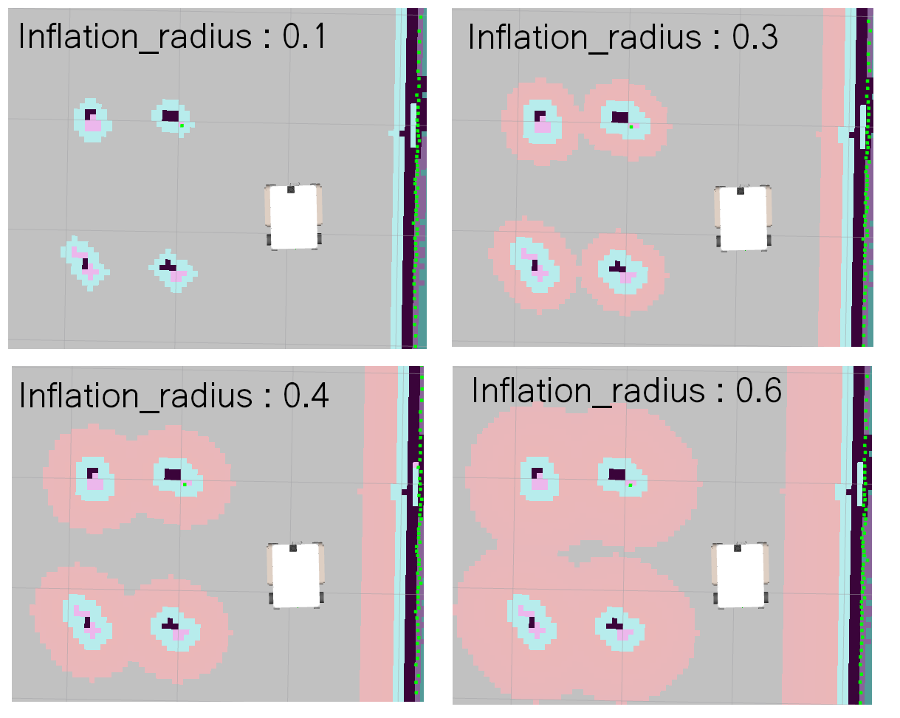
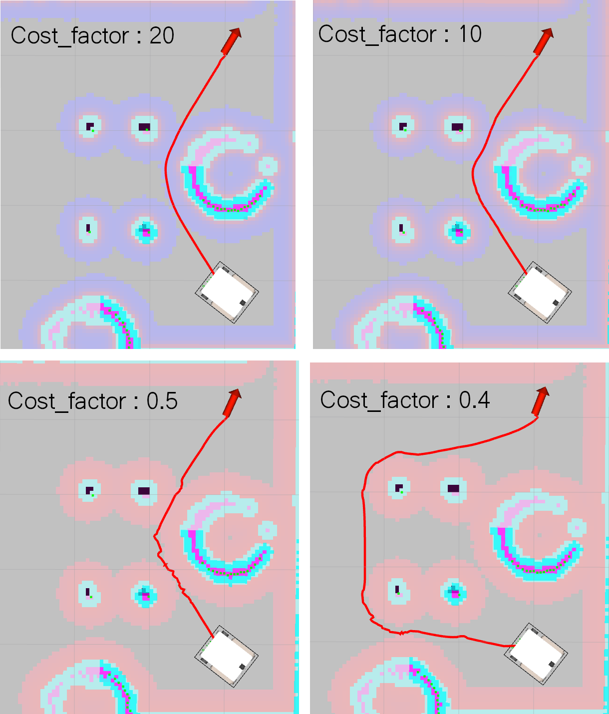
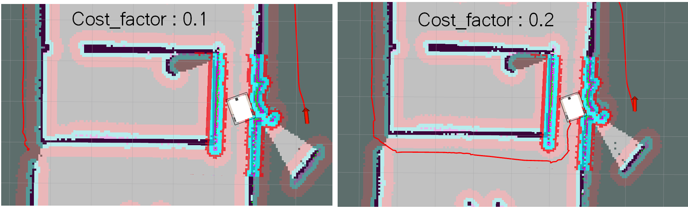

Move base Flex
Move_base_flex est un composant ROS (Robot Operating System) utilisé pour la planification de la navigation autonome dans un environnement de robot. Il fournit une solution pour la planification de la navigation autonome en utilisant des algorithmes de planification de la trajectoire et de la gestion de la carte de coûts.

MoveBaseFlex est une extension de la bibliothèque de navigation de base de ROS (Robot Operating System), qui est également appelée MoveBase. MoveBaseFlex hérite du fonctionnement de base de MoveBase, mais ajoute des fonctionnalités supplémentaires pour prendre en charge différents algorithmes de planification et de suivi de chemin pour les robots mobiles.
MoveBaseFlex est conçu pour être plus flexible que MoveBase et peut être utilisé pour des scénarios de navigation plus complexes. Il permet de changer facilement les algorithmes de planification et de suivi de chemin en fonction des besoins spécifiques de l'application, sans avoir à modifier le code source.
Voir -> Documentation Move_Base_Flex
Pour realiser une navigation flexible est adpaté a notre besoin nous allons nous ajouter nos propre plugin qui vont ensuite être appeler par les serveur move_base_flex

Global Costmap
La carte fournie par un Lidar ezst utulisé par le Global Costmap. Le coût associé à chaque pixel de la carte est déterminé par la planification de chemin et l'évitement d'obstacles. Plus précisément, le Global Costmap utilise des données de capteurs pour détecter les obstacles et les ajouter à la carte, en assignant un coût élevé à ces zones pour indiquer aux algorithmes de planification de chemin qu'il est préférable de les éviter. Le Global Costmap est utilisé pour générer des chemins sûrs pour le robot en fonction de son environnement actuel.
Le Global Costmap est une carte à grande échelle qui représente l'environnement dans son ensemble, en incluant des obstacles déterminés par les capteurs du robot. Cette carte est utilisée pour planifier des chemins à long terme pour le robot en évitant les obstacles.

| Paramètre | Valeur |
|---|---|
global_frame |
map |
robot_base_frame |
base_footprint |
update_frequency |
10.0 |
publish_frequency |
10.0 |
transform_tolerance |
10 |
static_map |
true |
latch_xy_goal_tolerance |
false |
inflation_radius |
0.35 |
cost_scaling_factor |
0.1 |
Local Costmap
Le local_costmap est une partie du système de navigation ROS qui permet à un robot de construire et maintenir une carte locale de son environnement immédiat. Ce local_costmap utilise souvent des données provenant d'un capteur LiDAR (ou Laser Detection and Ranging) pour mesurer la distance aux obstacles dans son environnement. Les données du LiDAR sont utilisées pour créer une carte 2D de la région environnante, où chaque pixel représente la distance à un obstacle ou un espace libre. Cette carte est ensuite utilisée par l'algorithme de navigation pour planifier un chemin de manière à éviter les obstacles.
Le local_costmap est généralement défini avec un certain nombre de paramètres, tels que la fréquence de mise à jour, la taille de la fenêtre roulante, la résolution, l'inflation des obstacles, etc. qui déterminent comment les données du LiDAR sont utilisées pour construire et maintenir la carte locale. En général, l'objectif est de fournir une représentation précise et à jour de l'environnement du robot pour aider à la planification de son chemin de manière sûre et efficace.
| Paramètre | Valeur |
|---|---|
global_frame |
odom |
robot_base_frame |
base_footprint |
update_frequency |
10.0 |
publish_frequency |
10.0 |
transform_tolerance |
10 |
rolling_window |
true |
width |
3 |
height |
3 |
resolution |
0.05 |
latch_xy_goal_tolerance |
false |
inflation_radius |
0.2 |
cost_scaling_factor |
0.2 |
Global Planner
Le Global Planner est responsable de la planification du chemin global pour un robot mobile pour aller d'un point de départ à un point d'arrivée. Il utilise une carte de coût pour évaluer les différents chemins possibles et en déduire le plus optimal. Il peut utiliser des algorithmes de planification de chemin tels que l'algorithme A * ou Dijkstra pour trouver le chemin optimal. Le Global Planner est généralement utilisé en conjonction avec le Local Planner pour former un système complet de navigation pour les robots mobiles.
Voir -> Documentation Global Planner
Ce plugin peut etre appeler en utilisant le service /make plan ou grace à l'action /get_path
Action /get_path
Voici un exemple de code Python qui souscrit au topic /move_base_simple/goal et publie la cible dans l'action /get_path
import rospy
import actionlib
from geometry_msgs.msg import PoseStamped
from move_base_msgs.msg import GetPathAction, GetPathGoal
class MoveBaseFlex:
def __init__(self):
self.sub = rospy.Subscriber("/move_base_simple/goal", PoseStamped, self.callback)
self.client = actionlib.SimpleActionClient('move_base_flex/get_path', GetPathAction)
def callback(self, msg):
self.client.wait_for_server()
goal = GetPathGoal()
goal.target_pose = msg
self.client.send_goal(goal)
if __name__ == '__main__':
rospy.init_node('move_base_flex_node')
mbf = MoveBaseFlex()
rospy.spin()
Dans le Global Planner de ROS, le "cost_factor" (facteur de coût) est un paramètre qui détermine le niveau de pondération des coûts associés à chaque cellule de la "costmap". Il s'agit d'un nombre à virgule flottant avec une valeur par défaut de 3.0. Il peut influencer le comportement du planificateur en termes de préférence pour certain pixels sur la carte.

Le cost_factor indique à quel point une cellule sera évitée par le planificateur de chemin durant la planification de la trajectoire pour atteindre la destination souhaitée.
Un coût facteur élevé indique que la cellule est considérée comme difficile à traverser et sera donc évitée par le planificateur de chemin. Inversement, un coût facteur faible indique que la cellule est considérée comme facile à traverser et sera donc favorisée par le planificateur de chemin.
Attention de si le cost_factor est trop faible, il risque de créer des paths erronées:  Ci-dessus avec un costMap de 0.1, la path generé ne débute pas au niveau du robot
source devel/setup.bash
export TURTLEBOT3_MODEL=rescue
roslaunch turtlebot3_gazebo turtlebot3_world.launch
source devel/setup.bash
export TURTLEBOT3_MODEL=rescue
roslaunch mbf_advanced amcl_demo_mbf_recovery.launch
source devel/setup.bash
rosrun mbf_advanced pytreesRecovery.py
rosrun rqt_py_trees rqt_py_trees
Move base Client
Le launch file suivant lance "move_base_flex". Ce noeud appartient au package "mbf_costmap_nav" et utilise le type "mbf_costmap_nav".
Le noeud charge plusieurs fichiers de paramètres ROS à l'aide de la commande "rosparam". Les fichiers de paramètres définissent les comportements du noeud "move_base_flex", tels que les paramètres de coûts pour les cartes locales et globales de l'environnement ainsi que les paramètres de planification de la base locale. Les paramètres de récupération "move_base_flex_recovery" sont également chargés pour définir les comportements de récupération.
<node name="move_base_flex" pkg="mbf_costmap_nav" type="mbf_costmap_nav" required="true" output="screen" clear_params="true">
<rosparam file="$(find mbf_advanced)/param/move_base_classic/costmap_common_params_$(arg model).yaml" command="load" ns="global_costmap" />
<rosparam file="$(find mbf_advanced)/param/move_base_classic/costmap_common_params_$(arg model).yaml" command="load" ns="local_costmap" />
<rosparam file="$(find mbf_advanced)/param/move_base_classic/local_costmap_params.yaml" command="load" />
<rosparam file="$(find mbf_advanced)/param/move_base_classic/global_costmap_params.yaml" command="load" />
<rosparam file="$(find mbf_advanced)/param/move_base_flex_recovery.yaml" command="load"/>
<rosparam file="$(find mbf_advanced)/param/move_base_classic/base_local_planner_params.yaml" command="load" />
</node>
Nous incluons les different paramètre necessaire pour parametre nos plugins
La premiere etape et de se soscrire au topic poseStamped qui peremt d'envyer un goal et d'envoyer ce goal a move base en utilisant les action de action lib
#!/usr/bin/env python
import actionlib
import rospy
import nav_msgs.srv as nav_srvs
import mbf_msgs.msg as mbf_msgs
import move_base_msgs.msg as mb_msgs
from geometry_msgs.msg import PoseStamped
def simple_goal_cb(msg):
mbf_mb_ac.send_goal(mbf_msgs.MoveBaseGoal(target_pose=msg))
rospy.logdebug("Relaying move_base_simple/goal pose to mbf")
mbf_mb_ac.wait_for_result()
status = mbf_mb_ac.get_state()
result = mbf_mb_ac.get_result()
rospy.logdebug("MBF execution completed with result [%d]: %s", result.outcome, result.message)
if __name__ == '__main__':
rospy.init_node("move_base_relay")
# move base flex ation client relays incoming mb goals to mbf
mbf_mb_ac = actionlib.SimpleActionClient("move_base_flex/move_base", mbf_msgs.MoveBaseAction)
mbf_mb_ac.wait_for_server(rospy.Duration(20))
# move_base simple topic and action server
mb_sg = rospy.Subscriber('move_base_simple/goal', PoseStamped, simple_goal_cb)
rospy.on_shutdown(lambda: mbf_mb_ac.cancel_all_goals())
rospy.spin()sd
Explication du code:
On créer un subsciber "mb_sb" qui souscit au topic "move_base_simple/goal" de type PoseStamped dont le CallBack et la fonction simple_goal_cb
mbf_mb_ac = actionlib.SimpleActionClient("move_base_flex/move_base", mbf_msgs.MoveBaseAction)
mbf_mb_ac.wait_for_server(rospy.Duration(20))
On instancit un client mbf_mb_ac qui va se connecter au node (serveur) /move_base_flex avec commme action : /move_base_flex/move_base
Le node move_base_flex dispose de plusieur action (fichier source dans /move_base_flex/mbf_abstract_nav/src/move_base_action.cpp)
Whatch py_tree doc http://docs.ros.org/en/kinetic/api/py_trees_ros/html/tutorials.html